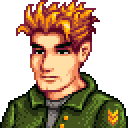

Anão
O enigmático Anão de Stardew Valley é um personagem misterioso e recluso que reside nas profundezas das Minas. Pouco se sabe sobre sua origem e história, tornando-o um dos habitantes mais enigmáticos da região. O Anão é encontrado no Carrinho de Viagem do Deserto, vendendo itens raros e valiosos que podem ser adquiridos com Minérios de Fusão.

Caroline
Caroline é uma residente de Pelican Town, casada com Pierre e mãe de Abigail. Ela é uma mulher amigável que gosta de jardinagem e passa seu tempo na Casa da Fazenda, onde organiza eventos comunitários e festivais. Caroline também é uma das participantes do grupo de exercícios liderado por Robin. Embora não seja um personagem casável.

Clint
Clint é o ferreiro de Pelican Town e é responsável pela manutenção e aprimoramento de ferramentas. Ele opera a Blacksmith's Shop e é visto frequentemente trabalhando na forja. Clint é conhecido por sua timidez e falta de confiança em si mesmo, especialmente ao lidar com a paixão que nutre por Emily. No entanto, Clint não é um personagem casável.

Demetrius
Demetrius é um cientista que vive na Casa da Montanha com sua esposa Robin e seus dois filhos, Maru e Sebastian. Ele é apaixonado por pesquisa e estuda a flora e fauna de Stardew Valley. Demetrius frequentemente pede aos jogadores que tragam amostras de diferentes plantas e animais. Apesar de sua contribuição para o entendimento do ecossistema local, Demetrius não é um personagem casável.

Evelyn
Evelyn é uma adorável idosa e esposa de George e mora com seu neto Alex. A mãe falecida de Alex Clara era filha de Evelyn.. Ela vive uma vida tranquila, dedicando seu tempo à jardinagem e à preparação de alimentos deliciosos. Evelyn é conhecida por sua natureza gentil e conselhos sábios. Embora seja uma presença acolhedora na cidade, ela não é um personagem casável.

Wizard
O Mago, muitas vezes referido apenas como "Wizard", é um misterioso residente que vive na Torre do Mago, ao norte de Pelican Town. Ele é especialista em magia arcana e alquimia. Os jogadores podem visitar o Mago para aprender mais sobre os segredos do mundo mágico de Stardew Valley. Embora não seja um personagem casável, suas interações adicionam uma dimensão mágica à jogabilidade.

George
George é um morador idoso de Pelican Town conhecido por sua natureza mal-humorada e observadora. Ele vive com sua esposa Evelyn em uma casa próxima à praça da cidade. George é frequentemente visto em sua cadeira de rodas,observando a vida na cidade com um olhar crítico. Apesar de sua atitude inicialmente reservada, George revela-se uma fonte de sabedoria e experiência ao longo do tempo.

Gus
Gus é o proprietário do Stardrop Saloon, o bar local de Pelican Town. Ele serve como o principal chef do restaurante e organiza eventos como o Festival de Sopa. Gus é conhecido por sua natureza amigável e acolhedora, tornando o Saloon um ponto de encontro popular para os habitantes locais. Embora desempenhe um papel central na vida noturna da cidade, Gus não é um personagem casável.

Jas
Jas é uma das crianças animadas e encantadoras de Pelican Town. Ela frequenta a escola com Vincent e é supervisionada por Penny, mãe de Abigail. Jas é conhecida por sua energia contagiante e entusiasmo pela vida. Seus comentários inocentes e sua presença alegre tornam-na uma adição adorável à comunidade. Embora jovem demais para se envolver romanticamente.

Jodi
Jodi é outra moradora de Pelican Town, casada com Kent e mãe de Sam e Vincent. Ela é uma dona de casa dedicada e pode ser encontrada realizando tarefas domésticas em sua casa. Jodi é ativa na comunidade e participa de eventos locais. Sua personalidade calorosa e amigável a torna uma presença reconfortante em Pelican Town, mas ela não é um personagem casável.

Kent
Kent é um ex-militar que retorna a Pelican Town depois de servir no exterior. Ele é casado com Jodi e pai de dois filhos, Sam e Vincent. Kent enfrenta desafios ao se readaptar à vida civil, mas sua presença adiciona uma dinâmica única à comunidade. Os jogadores podem interagir com Kent em eventos sazonais e aprender mais sobre sua história e experiências como veterano.

Krobus
Krobus é um NPC incomum que Krobus não pode viajar para fora no sol, assim ele pode sempre ser encontrado nos esgotos.. Ele é um Monstro da Poeira, uma raça subterrânea, e age como comerciante, vendendo itens raros e únicos. Os jogadores podem desenvolver uma amizade com Krobus, mas não é possível ter um relacionamento romântico com ele..

Leo
Leo é um personagem introduzido na atualização 1.5 do Stardew Valley. Ele é um artista que mora na Ilha Ginger, um local novo acessível por meio do ônibus comunitário. Leo dedica-se à sua paixão pela escultura e expressão artística. Sua personalidade tranquila e amor pela natureza reflete a atmosfera serena da Ilha Ginger. Sua presença adiciona uma dimensão artística.

Lewis
O prefeito de Pelican Town, Lewis, é responsável por manter a ordem e organizar eventos comunitários. Ele é um líder respeitado na cidade e muitas vezes é visto participando ativamente da vida social. Lewis é conhecido por seu chapéu e calças vermelhas distintas. Embora não seja um personagem casável, sua presença é fundamental para o funcionamento da cidade.

Linus
Linus é um eremita que vive em uma barraca próxima às Minas. Embora tenha escolhido um estilo de vida mais isolado, Linus é uma pessoa sábia e gentil, que valoriza a simplicidade e a gratidão pela natureza. Os jogadores podem interagir com Linus, aprendendo mais sobre sua filosofia de vida e até mesmo participar de eventos comunitários ao lado dele.

Marnie
Marnie é a dona da fazenda local, a Marnie's Ranch, onde cria animais e vende produtos relacionados à pecuária. Ela reside na região nordeste. Ela é amiga de Robin e Demetrius e é conhecida por seu envolvimento na comunidade. Marnie é uma presença constante na vida dos fazendeiros, fornecendo suprimentos e animais, mas não é um personagem casável.

Pam
Pam é a motorista do ônibus comunitário, que leva os jogadores para o Deserto após ser consertado. Ela é conhecida por seu estilo de vida relaxado e amor por uma boa cerveja. Pam tem uma relação próxima com seu filho, Shane, e é uma personagem recorrente em eventos sociais. Apesar de sua importância para a acessibilidade do Deserto.

Pierre
Pierre é o dono da loja geral, a Pierre's General Store, onde os fazendeiros podem comprar sementes, utensílios agrícolas e outros produtos essenciais. Ele é casado com Caroline e pai de Abigail. Pierre desempenha um papel crucial na economia da cidade, mantendo a loja aberta diariamente e participando de eventos comunitários.

Robin
Robin é uma habilidosa carpinteira e arquiteta que vive ao lado de sua loja, a Carpenter's Shop. Ela é casada com Demetrius e tem dois filhos, Maru e Sebastian. Além de oferecer serviços de construção e melhorias para a fazenda, Robin também participa de eventos comunitários e festivais. Sua personalidade trabalhadora e amigável a torna uma presença constante em Pelican Town.

Sandy
Sandy é uma mercadora do Deserto, uma área que os jogadores podem acessar após desbloquear o ônibus comunitário. Ela vende itens exóticos e raros que não estão disponíveis em Pelican Town. Sandy é amigável e acolhedora, oferecendo aos fazendeiros a oportunidade de adquirir mercadorias únicas. Apesar de sua presença significativa, Sandy não é um personagem casável.

Vincent
Vincent é uma das crianças vivazes de Pelican Town e frequentemente é visto brincando com Jas. Ele é filho de Jodi e Kent, e seu irmão mais velho é Sam. Vincent participa da escola local e é supervisionado por Penny. Sua personalidade curiosa e alegre o torna um membro adorável da comunidade. Embora muito jovem para relacionamentos românticos, Vincent contribui para a vitalidade da cidade.

Willy